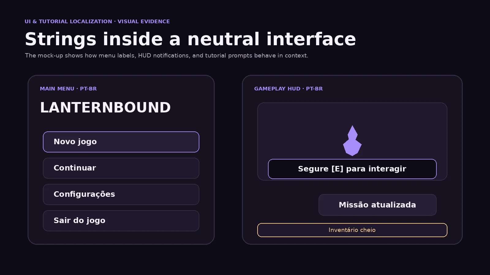
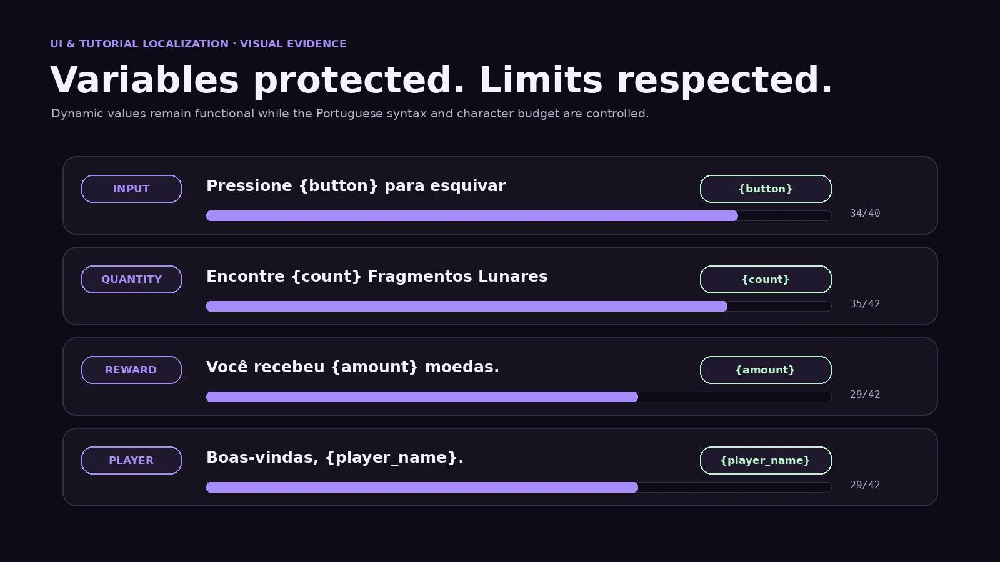

UI & tutorial localization case study
Player-facing text
built for context.
An English-to-Brazilian Portuguese localization study covering menus, buttons, tutorials, system messages, quest objectives, variables, input prompts, capitalization, and character limits.
Project overview
Short strings with large gameplay impact.
UI text must communicate an action or state immediately while respecting space, platform, variables, style, and context.
Lanternbound is a fictional fantasy adventure game created solely for this portfolio sample. The localization database contains 36 original English strings and their final Brazilian Portuguese versions.
The sample covers main menus, buttons, HUD notifications, tutorials, system errors, warnings, quest objectives, dynamic notifications, settings, and interaction prompts.
Visual evidence
Localized strings inside player-facing layouts.
Original interface mock-ups demonstrate menu fit, tutorial clarity, placeholders, and character-limit control.


My role
Localization, terminology, adaptation, and QA.
The work includes context analysis, character-count tracking, variable protection, style-guide development, terminology control, and functional linguistic review.
Scope
36 strings across player-facing systems.
Every final string remains within its assigned character limit.
Content architecture
Different contexts require different language.
Menus & buttons
Infinitive labels, sentence case, and compact navigation wording.
HUD notifications
Short status messages that remain readable during play.
Tutorials
Direct imperatives, protected input prompts, and player-first instruction order.
System messages
Clear errors, warnings, recovery actions, and confirmation language.
Quest objectives
Imperative action verbs and consistent world terminology.
Dynamic strings
Runtime names, quantities, rewards, and protected variables.
Settings
Concise labels for language and accessibility options.
Contextual prompts
Interaction text adapted to the action available in the game world.
Key decisions
Context before literal equivalence.
The same English grammar can require different Portuguese forms depending on whether the text is a button, objective, warning, or tutorial.
New Game → Novo jogo
Alternatives considered: Novo Jogo; Iniciar novo jogo
Sentence case follows Brazilian Portuguese UI conventions. The shorter form fits the menu and remains immediately recognisable.
Continue → Continuar
Alternatives considered: Continuar jogo; Retomar
Buttons use the infinitive. Continuar is concise and does not imply that the game is currently paused.
Inventory Full → Inventário cheio
Alternatives considered: Não há espaço suficiente no inventário
The selected version communicates the state in 16 characters and works as a short gameplay toast.
Hold [E] to Interact
Alternatives considered: Mantenha [E] pressionado para interagir
The shorter imperative respects the 32-character limit and keeps the protected input prompt unchanged.
Connection Lost → Conexão perdida
Alternatives considered: A conexão foi perdida; Desconectado
The noun phrase works as an error heading. A separate body string explains the recovery action.
Unsaved Progress Will Be Lost
Alternatives considered: Você perderá o progresso não salvo
The impersonal warning is neutral, clear, and preserves the consequence without blaming the player.
Return to the Village
Alternatives considered: Voltar à vila; Retorne para a vila
Because this is a quest objective, the imperative is preferred. A button with the same English structure would use the infinitive.
Quest Updated → Missão atualizada
Alternatives considered: Missão foi atualizada; Atualização de missão
The concise result message fits the HUD and follows the approved terminology for Quest.
Variables & prompts
Protected content remains functional.
Runtime variables and input prompts must remain unchanged while moving naturally inside the Portuguese sentence.
| Type | Source | Localized | Protected content |
|---|---|---|---|
| Keyboard prompt | Hold [E] to Interact |
Segure [E] para interagir |
[E] |
| Input variable | Press {button} to Dodge |
Pressione {button} para esquivar |
{button} |
| Quantity | Find {count} Moon Shards |
Encontre {count} Fragmentos Lunares |
{count} |
| Reward amount | You received {amount} coins. |
Você recebeu {amount} moedas. |
{amount} |
| Item name | {item_name} acquired. |
Você obteve: {item_name}. |
{item_name} |
| Player name | Welcome back, {player_name}. |
Boas-vindas, {player_name}. |
{player_name} |
Character limits
Meaning preserved inside fixed space.
The database records the final length, assigned limit, and remaining space for every localized string.
Concise warning
Protected prompt
The input prompt remains intact and the final string uses 25 characters.
Database result
0
Final strings exceeding their assigned limits.
Complete string table
Source, target, limits, and protected content.
The downloadable CSV files contain additional context and localization notes.
| ID | Source EN | PT-BR | Limit | Length | Variables | Space usage |
|---|---|---|---|---|---|---|
| MENU_NEW_GAME | New Game | Novo jogo | 14 | 9 | — |
|
| MENU_CONTINUE | Continue | Continuar | 14 | 9 | — |
|
| MENU_SETTINGS | Settings | Configurações | 16 | 13 | — |
|
| MENU_QUIT | Quit Game | Sair do jogo | 16 | 12 | — |
|
| BUTTON_ACCEPT | Accept | Aceitar | 12 | 7 | — |
|
| BUTTON_CANCEL | Cancel | Cancelar | 12 | 8 | — |
|
| BUTTON_RETRY | Retry | Tentar novamente | 18 | 16 | — |
|
| BUTTON_BACK | Back | Voltar | 10 | 6 | — |
|
| HUD_INVENTORY_FULL | Inventory Full | Inventário cheio | 22 | 16 | — |
|
| HUD_QUEST_UPDATED | Quest Updated | Missão atualizada | 24 | 17 | — |
|
| HUD_OBJECTIVE_COMPLETE | Objective Complete | Objetivo concluído | 24 | 18 | — |
|
| HUD_LEVEL_UP | Level Up | Novo nível | 16 | 10 | — |
|
| TUT_INTERACT | Hold [E] to Interact | Segure [E] para interagir | 32 | 25 | [E] |
|
| TUT_DODGE | Press {button} to Dodge | Pressione {button} para esquivar | 40 | 32 | {button} |
|
| TUT_MAP | Open the Map to View Your Objective | Abra o mapa para ver seu objetivo | 42 | 33 | — |
|
| TUT_HEAL | Use a Healing Flask to Recover Health | Use um frasco de cura para recuperar vida | 48 | 41 | — |
|
| TUT_SPRINT | Hold {button} While Moving to Sprint | Segure {button} enquanto se move para correr | 48 | 44 | {button} |
|
| TUT_EQUIP | Equip the Sun Charm from Your Inventory | Equipe o Amuleto Solar no inventário | 44 | 36 | — |
|
| ERROR_CONNECTION_LOST | Connection Lost | Conexão perdida | 24 | 15 | — |
|
| ERROR_CONNECTION_BODY | Check your connection and try again. | Verifique sua conexão e tente novamente. | 52 | 40 | — |
|
| ERROR_SAVE_FAILED | The game could not be saved. | Não foi possível salvar o jogo. | 42 | 31 | — |
|
| ERROR_CLOUD_SYNC | Cloud save data could not be synced. | Não foi possível sincronizar os dados na nuvem. | 58 | 47 | — |
|
| WARN_UNSAVED_PROGRESS | Unsaved Progress Will Be Lost | O progresso não salvo será perdido | 42 | 34 | — |
|
| WARN_RETURN_TITLE | Return to the Title Screen? | Voltar à tela de título? | 34 | 24 | — |
|
| QUEST_RETURN_VILLAGE | Return to the Village | Volte para a vila | 28 | 17 | — |
|
| QUEST_FIND_SHARDS | Find {count} Moon Shards | Encontre {count} Fragmentos Lunares | 42 | 35 | {count} |
|
| QUEST_COLLECT_HERBS | Collect {count} Silverleaf Herbs | Colete {count} Ervas Folha-de-Prata | 44 | 35 | {count} |
|
| QUEST_DEFEAT_ENEMIES | Defeat {count} Ashborn | Derrote {count} Cinéreos | 36 | 24 | {count} |
|
| NOTIF_RECEIVED_COINS | You received {amount} coins. | Você recebeu {amount} moedas. | 42 | 29 | {amount} |
|
| NOTIF_ITEM_ACQUIRED | {item_name} acquired. | Você obteve: {item_name}. | 46 | 25 | {item_name} |
|
| NOTIF_WELCOME_BACK | Welcome back, {player_name}. | Boas-vindas, {player_name}. | 42 | 27 | {player_name} |
|
| SETTINGS_LANGUAGE | Language | Idioma | 16 | 6 | — |
|
| SETTINGS_SUBTITLES | Subtitles | Legendas | 16 | 8 | — |
|
| SETTINGS_TEXT_SIZE | Text Size | Tamanho do texto | 22 | 16 | — |
|
| SETTINGS_REDUCE_MOTION | Reduce Motion | Reduzir movimento | 22 | 17 | — |
|
| PROMPT_TALK | [E] Talk | [E] Conversar | 18 | 13 | [E] |
|
Style guide
A consistent player-facing voice.
Sentence case
Novo jogo · Missão atualizada · Tamanho do texto
English title case is not copied into Brazilian Portuguese.
Buttons
Continuar · Voltar · Aceitar · Cancelar
Standalone buttons use the infinitive.
Tutorials
Segure · Pressione · Abra · Use · Equipe
Direct instructions begin with an imperative verb.
Quest objectives
Volte · Encontre · Colete · Derrote
Objectives state the required player action directly.
Error handling
Conexão perdida
Concise headings are paired with clear recovery instructions.
Dynamic content
{count} · {amount} · {item_name} · {player_name}
Variables remain unchanged and are repositioned only when grammar requires it.
Quality assurance
Linguistic and functional checks.
Completed checks
- Source meaning preserved
- Context reviewed for each string
- Character limits respected
- Variables preserved exactly
- Input prompts retained
- Sentence case applied
- Buttons and objectives differentiated
- Terminology applied consistently
In-context follow-up
- Test all strings in final UI layouts
- Review controller glyph replacement
- Test long player and item names
- Verify pluralisation for dynamic quantities
- Test accessibility text scaling
- Run regression review after implementation
Outcome
A reusable UI localization workflow.
The final deliverables combine source context, approved localization, character limits, protected variables, terminology, and decision notes in a format suitable for implementation and QA.
The case study demonstrates that effective UI localization depends on context, interface space, platform behaviour, gameplay function, and consistent player-facing language.
Technical documentation
Review the source and localized string databases.
The public repository contains both CSV files, the approved terminology, character-count data, and implementation notes.